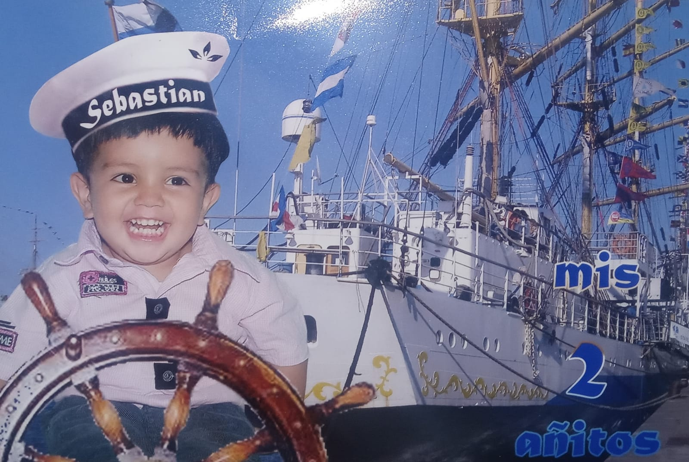
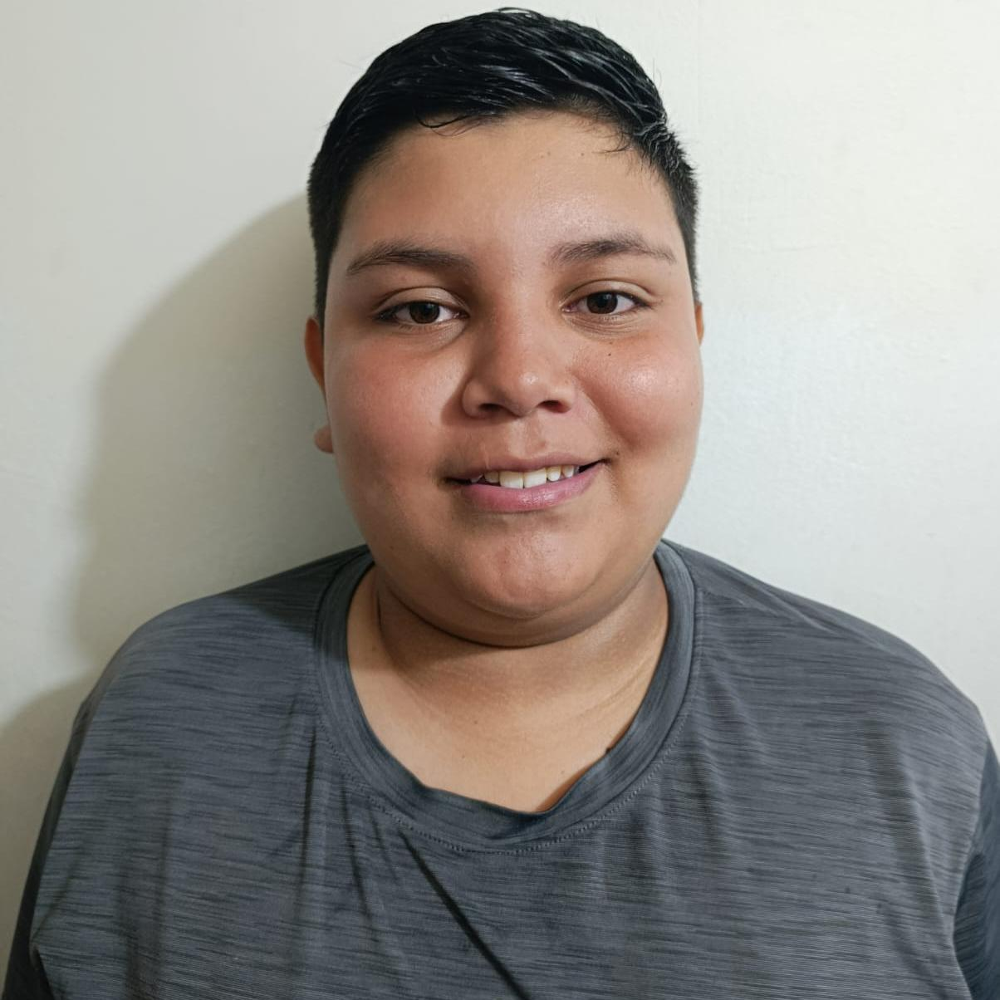

Toca una tarjeta para ver más.
1: Quién soy

Soy Johan Sebastián Garzón, estudiante de desarrollo de software en el SENA. Soy una persona responsable, juicioso y respetuoso: cumplo con mis horarios y realizo mis actividades con compromiso.
Soy de la ciudad de Pereira y vivo con mi familia, conformada por mi abuela, mi hermano, mi madre y yo.
Casi nadie de la jornada de la mañana sabe que soy operado de las dos caderas por una caída que tuve, en la pierna derecha hoy tengo 4 platinas en la pierna derecha y 1 en la izquierda.
2: Mi recorrido

Soy egresado de la Institución Educativa Ciudadela Cuba y después empecé mi formación en el SENA.
He trabajado en la comercialización de quesos y derivados, y en atención al cliente y apoyo en ventas en la Ferretería El Cardal, en Pereira.
En la formación he construido proyectos como Atesa Ecológica y el sistema web de la Charcutería El Monito.
3: Hacia dónde voy
Mi objetivo es terminar mi formación, seguir estudiando y crecer profesionalmente en el desarrollo de software.
A corto plazo quiero tener mi propio medio de transporte. A largo plazo quiero tener mi empresa o emprendimiento, que me permita sostenerme y tener mi casa propia para que mi familia esté cómoda.